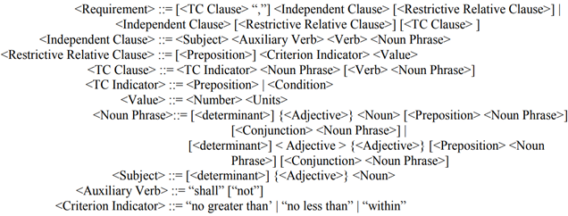
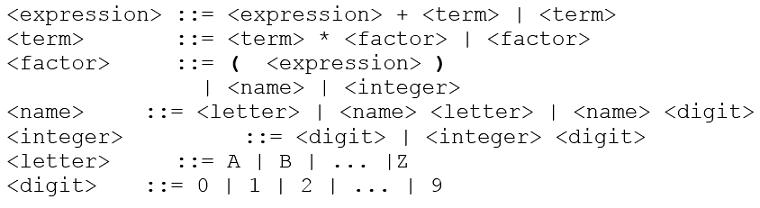
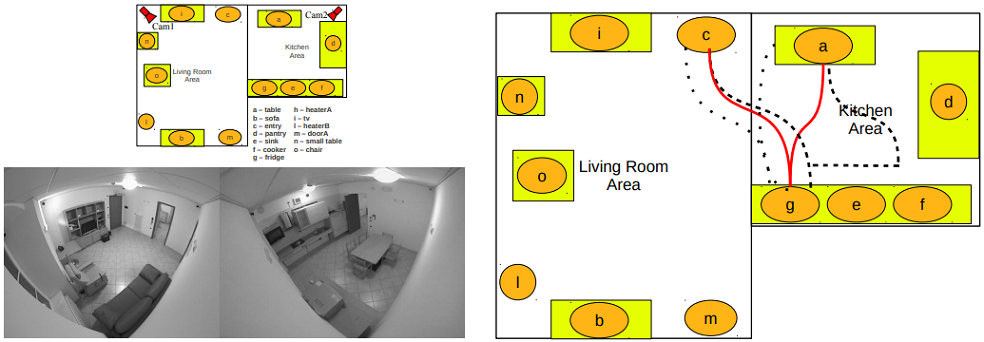
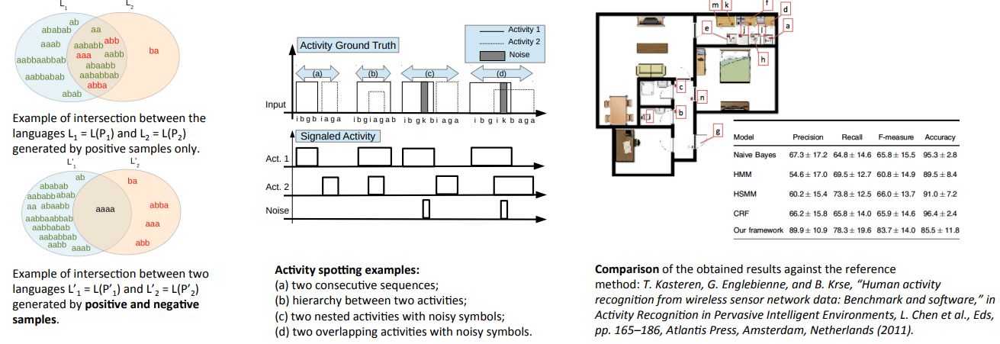

APLIKASI PEMANFAATAN CONTEXT-FREE GRAMMAR (CFG)
Teori Bahasa dan Otomata
Apa itu Context-Free Grammar?
Context-Free Grammar (CFG) atau tata bahasa bebas konteks adalah tata bahasa formal yang digunakan untuk menghasilkan semua kemungkinan pola string dalam bahasa formal tertentu.
CFG G dapat didefinisikan oleh empat tupel sebagai:
G = (V, T, P, S)Dimana,
- G adalah tata bahasanya, yang terdiri dari sekumpulan aturan produksi. Ini digunakan untuk menghasilkan string bahasa
- T adalah himpunan terakhir dari simbol terminal, dilambangkan dengan huruf kecil
- V adalah himpunan terakhir dari simbol non-terminal, dilambangkan dengan huruf kapital
- P adalah seperangkat aturan produksi, yang digunakan untuk mengganti simbol non-terminal (di sisi kiri produksi) dalam string dengan simbol terminal atau non-terminal lain (di sisi kanan produksi)
- S adalah simbol awal yang digunakan untuk menurunkan string. Kita dapat menurunkan string dengan berulang kali mengganti non-terminal di sisi kanan produksi sampai semua non-terminal telah diganti dengan simbol terminal
Aplikasi Pemanfaatan Context-Free Grammar
- CFG for Requirements
- Subjek sebagai "Organizational Message Traffic";
- Auxiliary Verb sebagai “shall”;
- Verb sebagai "be";
- Target sebagai "transferred".
- Preposisi sebagai "with";
- Indikator Kriteria sebagai "no greater than";
- Nilai Angka sebagai "1 dalam 103 ";
- Nilai Unit sebagai "BER".
- CFG for Arithmetic Expressions
- expr --> number
- expr --> (expr)
- expr --> expr + expr
- expr --> expr - expr
- expr --> expr * expr
- expr --> expr / expr
- Aturan pertama (atau produksi) menyatakan bahwa sebuah ekspresi dapat ditulis ulang sebagai (atau diganti dengan) angka. Dengan kata lain, angka adalah ekspresi yang valid.
- Aturan kedua mengatakan bahwa expr yang diapit tanda kurung juga merupakan expr. Perhatikan bahwa aturan ini mendefinisikan ekspresi dalam istilah ekspresi, contoh penggunaan rekursi dalam definisi tata bahasa bebas konteks. Rekursi adalah satu hal yang memberi CFG kekuatan yang tidak dimiliki oleh RE dan FA
- Aturan yang tersisa mengatakan bahwa penjumlahan, selisih, hasil perkalian, atau pembagian dari dua expr juga merupakan expr
- CFG for Programming Languages
- CFG Parsing For High-Speed Network Applications
- Memproses data untuk melintasi internet
- Harus ada pencocok pola berbasis aturan yang mampu mendeteksi string dan / atau ekspresi reguler
- Pencocokan pola yang naif rentan terhadap identifikasi positif palsu
- CFG memberikan ekspresi tingkat yang lebih tinggi daripada string dan ekspresi reguler
- Goal: merancang dan menerapkan CFG kecepatan tinggi
- Tokenizer (pencocokan pola)
- Struktur parsing (dari tata bahasa)
- Unit deteksi kesalahan
- Unit pemulihan
- CFG For Human Behavior Recognition
- Merepresentasikan jalur masuk melalui sekumpulan hot spot yang ditentukan, untuk membawa representasi level rendah ke representasi simbolis;
- Selama pelatihan, terapkan algoritme untuk mengekstrak tanda tangan setiap kelas dan membuat kode model CFG berdasarkan sampel positif dan negatif;
- Memperkenalkan kemungkinan pelatihan ulang sistem secara efisien jika ada kejadian yang salah diklasifikasikan atau tidak dikenali;
- Dalam klasifikasi, operasikan prosedur parsing yang memungkinkan deteksi yang benar dari aktivitas juga saat aktivitas tersebut digabungkan dan / atau disarangkan satu sama lain.
- Pemanfaatan CFG Lainnya:
- For parsing the program by constructing syntax tree
- For construction of compilers
- For data processing
- For natural language processing
- For neural Networks
- For multi functional radar construction
Kami menggunakan teori bahasa formal untuk mewakili semantik dari konstruksi tata bahasa Inggris. Dalam mengembangkan tata bahasa, kekuatan ekspresif bahasa perlu diseimbangkan dengan kemampuan pembuktian. Bahasa ini dirancang untuk menerapkan praktik terbaik teknik persyaratan. Dengan demikian, pembatasan ditempatkan pada konstruksi tata bahasa yang diizinkan. Batasannya adalah menghilangkan kata ganti dari kosakata. Diakui bahwa penggunaan kata ganti memperkenalkan ambiguitas ke dalam persyaratan dan harus dihambat. Batasan lain adalah fokus pada suara aktif. Menggunakan persyaratan yang tertulis dalam suara aktif memungkinkan identifikasi hubungan yang ditangkap dalam persyaratan.
Tata bahasa juga perlu diterapkan pada persyaratan tertulis manual sebelumnya. Tata bahasanya harus dirancang untuk mengkompensasi kesalahan kecil yang dibuat dalam persyaratan tertulis. Kumpulan dokumen persyaratan diperiksa dan diurai untuk menentukan penerapan tata bahasa. Tata bahasanya kemudian diadaptasi untuk memperluas cakupan untuk memasukkan pola persyaratan umum. Hasil pada tata bahasa adalah beberapa struktur untuk semantik serupa untuk menangkap variasi dalam gaya penulisan. Tata bahasanya tidak disesuaikan untuk persyaratan yang dianggap sangat buruk, karena akan berdampak pada penurunan kemampuan tata bahasa saat mengevaluasi persyaratan yang baik.
Berikut sebuah contoh dapat menjelaskan penggunaan tata bahasa dengan lebih baik yang diambil dari spesifikasi komunikasi. Pertimbangkan persyaratannya:
"Organizational Message Traffic shall be transferred with no greater than 1 in 103 BER"
Tata bahasa mengidentifikasi persyaratan yang berisi klausa independen diikuti dengan klausa relatif yang membatasi. Klausul independen, "Organizational Message Traffic shall be transferred", mengidentifikasi:
Klausul relatif restriktif berisi kriteria penerimaan persyaratan. Klausul ini mengidentifikasi:
Dengan demikian, komponen penyusun persyaratan telah diekstraksi untuk pemeriksaan individu. Dengan persyaratan terurai kami, kami dapat membandingkan persyaratan dengan konvensi penulisan yang berbeda dengan lebih baik. Misalnya kita bisa menyamakan "less than" dengan "no greater than" atau "103" dengan "1000". Tata bahasanya dapat diadaptasi untuk mencerminkan praktik perusahaan dengan cara ini. Jadi kami memiliki mekanisme untuk membandingkan secara semantik persyaratan yang mengimbangi gaya penulis. Ini penting untuk penerapan penalaran berbasis kasus.
Pada gambar di atas merangkum tata bahasa dalam Backus Naur Form ke tingkat intuitif. TC Clause adalah Klausul Bersyarat Temporal.
Contoh tata bahasa yang menghasilkan string yang mewakili ekspresi aritmatika dengan empat operator +, -, *, /, dan numbers sebagai operan adalah:
Satu-satunya simbol nonterminal dalam tata bahasa ini adalah expr, yang juga merupakan simbol awal. Simbol terminalnya adalah {+, -, *, /, (,), number} (Kami akan menafsirkan "number" untuk mewakili nomor yang valid).
Struktur bahasa Inggris diberikan dalam istilah mata pelajaran, kata kerja, dll. Struktur program komputer diberikan dalam istilah prosedur, pernyataan, ekspresi, dll. Misalnya, ekspresi aritmatika yang terdiri dari penjumlahan dan perkalian dapat dijelaskan menggunakan aturan berikut:
Di sini, kami telah menggunakan :: = untuk didefinisikan sebagai bukan panah (-->) seperti sebelumnya. Metalanguage BNF (Backus-Naur Form) adalah cara untuk menentukan bahasa bebas konteks, dan BNF awalnya didefinisikan menggunakan :: = daripada -->. Selama kita memahami apa yang dimaksud dan apa saja kemampuan dari notasi gramatikal tersebut, maka notasi tersebut tidak menjadi masalah. Kami akan sering menghilangkan tanda kurung sudut, <>, saat menulis BNF.
Tidak seperti bahasa alami seperti bahasa Inggris, semua string hukum dalam bahasa pemrograman dapat ditentukan menggunakan tata bahasa bebas konteks. Namun, tata bahasa untuk bahasa pemrograman juga memiliki string yang salah secara semantik. Misalnya bahasa bebas konteks tidak dapat digunakan untuk mengetahui apakah variabel, katakanlah, A, dideklarasikan menjadi tipe boolean digunakan dalam ekspresi aritmentik A + 1.
Terdapat 4 komponen utama pada arsitektur parser:

Pengenalan otomatis aktivitas dan perilaku manusia masih menjadi masalah yang menantang karena berbagai alasan, termasuk keakuratan data yang terbatas yang diperoleh oleh perangkat penginderaan, variabilitas tinggi dari perilaku manusia, dan kesenjangan antara tampilan visual dan semantik adegan.
Pendekatan simbolis dapat secara signifikan menyederhanakan analisis dan mengubah data mentah menjadi rantai pola penuh makna. Hal ini memungkinkan menyingkirkan sebagian besar kekacauan yang dihasilkan oleh operasi pemrosesan tingkat rendah, menanamkan informasi kontekstual yang signifikan ke dalam data, serta menggunakan pendekatan sintaksis sederhana untuk melakukan pencocokan antara urutan dan model yang akan datang.
Pernyataan masalah:
Aktivitas manusia sangat bervariasi: orang cenderung melakukan tindakan yang sama menggunakan jalan yang berbeda dalam kehidupan normal. Tujuan dari pekerjaan ini adalah untuk menentukan teknik yang kuat terhadap kebisingan untuk mewakili, mendeteksi dan mengklasifikasikan perilaku manusia yang kompleks.
Solusi berdasarkan CFG:
Hasil:
Referensi
Department of Computer Science. 2001. Grammars. New York: University of Rochester. https://bit.ly/2W2CXZ1.
Department Science. tth. Context-free Grammars for Programming Languages. Worcester: Worcester Polytechnic Institute. https://bit.ly/2W48pGa.
Jaiswal, Sonoo. tth. Context–Free Grammar (CFG). JavaTPoint: https://bit.ly/33Z4AWX.
Rosani, Andrea, dkk. 2015. Human Behavior Recognition Using A Context-Free Grammar. Trento: University of Trento. https://bit.ly/342dh2K.
Scott, William, dkk. 2004. Development and Application of a Context-free Grammar for Requirements. Adelaide: Universitas Australia Selatan. https://bit.ly/3qPIPD8.
Thogarcheti, Bramara Manjeera. 2015. Application of Context Free Grammers. SlidePlayer: https://bit.ly/344TeAV.